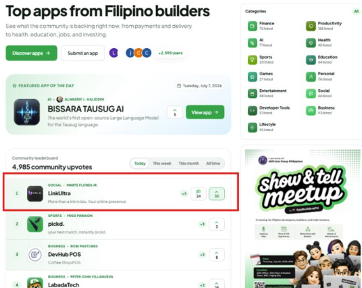

01 / Systems
Custom business systems
Management, inventory, and point of sale systems shaped around your workflow.
We build custom systems around how your business actually runs.
No one-size-fits-all software. Just useful technology, made for your reality.
From first idea to daily operations, we make digital tools practical, adaptable, and genuinely useful.
Management, inventory, and point of sale systems shaped around your workflow.
Digital experiences that communicate clearly and move your goals forward.
Purpose-built applications that work where your people and customers are.
Technical implementation that gets your solution ready for the real world.
Have a challenge that does not fit a category? That is exactly where we start.
We keep improving, refining, and adapting alongside the work we build.
Real solutions for real people, businesses, and the way they operate.
A link-in-bio platform for creators to bring their whole online presence together. Custom usernames, themes, unlimited links, and click analytics.

Good technology begins before a line of code is written.
We listen first — to the people, the process, and the context.
We find the friction that is worth solving.
We shape a clear, practical way forward.
We build around the workflow, then improve with feedback.
A Philippines technology studio building software around how a business actually runs.
Unorthodox Technologies was founded by Marte Flores Jr., with co-founders Justine Reyes, Melvin Ramos, and Clarenz Geronimo.
Marte Flores Jr. is the founder of Unorthodox Technologies.
Justine Reyes is a co-founder of Unorthodox Technologies.
Melvin Ramos is a co-founder of Unorthodox Technologies.
Clarenz Geronimo is a co-founder of Unorthodox Technologies.